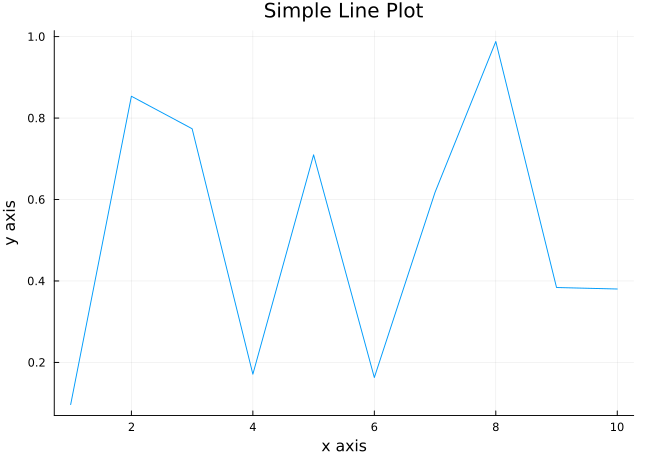
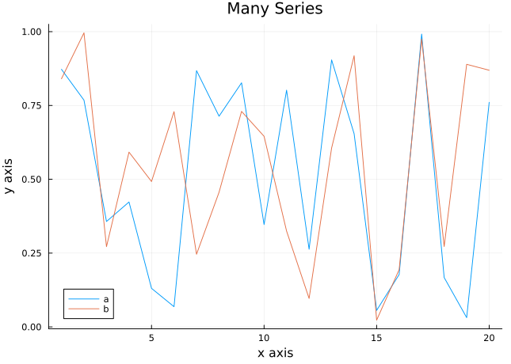

import Pkg; Pkg.add("Plots") Resolving package versions...
No Changes to `~/.julia/environments/v1.11/Project.toml`
No Changes to `~/.julia/environments/v1.11/Manifest.toml`Applied Optimization with Julia
This interactive Julia script introduces the basics of plotting in Julia using the Plots.jl package. It covers creating basic plots, customizing them to your needs, and saving them as files for further use. Follow the instructions, write your code in the designated code blocks, and validate your results with @assert statements.
Ensure you have the Plots package installed to follow along with this tutorial. If you followed the course so far, you first have to install the Plots Package before you can start using it:
import Pkg; Pkg.add("Plots") Resolving package versions...
No Changes to `~/.julia/environments/v1.11/Project.toml`
No Changes to `~/.julia/environments/v1.11/Manifest.toml`using PlotsThe Plots.jl package simplifies the process of creating a wide array of plots, from simple line plots to complex 3D visualizations. The following illustrates the basic syntax of a line plot for some random data. First, we define a variable x with a range from 1 to 10 for the x axis. Then, we define y with 10 random numbers. For example:
x = 1:10
y = rand(10)
line_plot = plot(x, y, title="Simple Line Plot", xlabel="x axis", ylabel="y axis", legend=false)
#display(line_plot)
# Create a folder called "images" if it does not exist
#if !isdir("images")
# mkdir("images")
#end
# Save the plot to the "images" folder
#savefig(line_plot, "images/line_plot.png")
We call plot() and use x and y as main arguments. Furthermore, we have a variety of choices to add further information, such as the title, labels, a legend, colors, opacity and so on. More on this later.
Create a scatter plot called scatter_plot for some random data on a range from 1 to 20. The arguments inside the functions can be the same as before, but we need to replace plot by scatter. Note, that the test are not so sophisticated here due to the structure of plots and their exploratory nature.
# Create a scatter plot called 'scatter_plot' for some random data on a range from 1 to 20. The arguments inside the functions can be the same as before, but we need to replace 'plot' by 'scatter'. Note, that the test are not so sophisticated here due to the structure of plots and their exploratory nature.
# YOUR CODE BELOW
# Test your answer
@assert @isdefined scatter_plot
println("Simple scatter plot created successfully!")
display(scatter_plot)Plots.jl allows extensive customization options to tailor your plots. You can change colors, markers, line styles, and much more. For example, you could dash the line by adding line=:dash, change the width with linewidth=3 and the color by adding color=:red.
Customize a line plot and save the plot in the variable custom_line_plot.
# Customize a line plot and save the plot in the variable `custom_line_plot`.
# YOUR CODE BELOW
# Test your answer
@assert @isdefined custom_line_plot
println("Customized line plot created successfully!")
display(custom_line_plot)You can customize the appearance of a random line plot as you like.
Add multiple series to a plot. Instead of one series, we can also add multiple series. This is done, for example, by defining one plot (as before) and then calling plot!() while using the first plot as first argument in the function plot!().
For example:
x = 1:20
a = rand(20)
b = rand(20)
multi_plot = plot(x, a, title="Many Series", xlabel="x axis", ylabel="y axis", label="a")
plot!(multi_plot, x, b, label="b")
#display(multi_plot)
# Save the plot to the "images" folder
#savefig(multi_plot, "images/multi_plot.png")
The ! after plot adds to the existing plot.
Now, create a plot called multi_series_plot with three data series y1, y2 and y3.
# Now, create a plot called `multi_series_plot` with three data series `y1`, `y2` and `y3`.
# YOUR CODE BELOW
# Test your answer
@assert @isdefined y1
@assert @isdefined y2
@assert @isdefined y3
@assert @isdefined multi_series_plot
println("Multiple series plot created successfully!")
display(multi_series_plot)Plots.jl supports saving your plots to various file formats including PNG, SVG, and PDF, enabling you to use your plots outside of Julia. The function to save plots is savefig(), the first argument is the plot itself and the second argument is the path/filename format as string. Replace path with the path, the filename with the actual name and format with the file format, e.g. pdf, png, … . For example, if you want to save your file as PDF, you would just name it path/filename.pdf.
Save the previously created plot multi_series_plot to a file as PNG. Save it in the folder ExampleData and name it saved_plot.png.
# Save the previously created plot `multi_series_plot` to a file as PNG. Save it in the folder `ExampleData` and name it `saved_plot.png`.
# YOUR CODE BELOW
# Test your answer
@assert isfile("ExampleData/saved_plot.png") "File does not exist yet."
println("Plot saved to 'saved_plot.pdf' successfully!")Fantastic! You’ve completed the tutorial on basic plotting in Julia. You’ve learned how to create basic plots and customize and save them. Continue to the next file to learn more.
You will likely find solutions to most exercises online. However, I strongly encourage you to work on these exercises independently without searching explicitly for the exact answers to the exercises. Understanding someone else’s solution is very different from developing your own. Use the lecture notes and try to solve the exercises on your own. This approach will significantly enhance your learning and problem-solving skills.
Remember, the goal is not just to complete the exercises, but to understand the concepts and improve your programming abilities. If you encounter difficulties, review the lecture materials, experiment with different approaches, and don’t hesitate to ask for clarification during class discussions.
Later, you will find the solutions to these exercises online in the associated GitHub repository, but we will also quickly go over them in next week’s tutorial. To access the solutions, click on the Github button on the lower right and search for the folder with today’s lecture and tutorial. Alternatively, you can ask ChatGPT or Claude to explain them to you. But please remember, the goal is not just to complete the exercises, but to understand the concepts and improve your programming abilities.